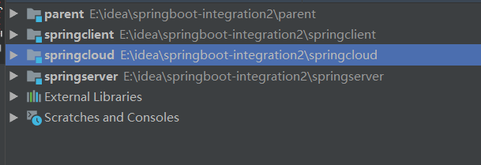
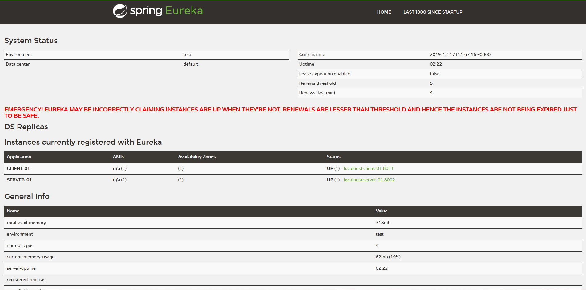

Feign是一个声明式的伪Http客户端，它使得写Http客户端变得更简单。
使用Feign，只需要创建一个接口并注解，它具有可插拔的注解特性，可使用Feign 注解和JAX-RS注解，Feign支持可插拔的编码器和解码器，Feign默认集成了Ribbon，并和Eureka结合，默认实现了负载均衡的效果。
Feign 简介
Feign 具有如下特性：
- 可插拔的注解支持，包括
Feign注解和JAX-RS注解
- 支持可插拔的
HTTP编码器和解码器
- 支持
Hystrix和它的Fallback
- 支持
Ribbon的负载均衡
- 支持
HTTP请求和响应的压缩Feign是一个声明式的Web Service客户端，它的目的就是让Web Service调用更加简单。它整合了Ribbon和Hystrix，从而不再需要显式地使用这两个组件。Feign还提供了HTTP请求的模板，通过编写简单的接口和注解，就可以定义好HTTP请求的参数、格式、地址等信息。接下来，Feign会完全代理HTTP的请求，我们只需要像调用方法一样调用它就可以完成服务请求。
简而言之：Feign能干Ribbon和Hystrix的事情，但是要用Ribbon和Hystrix自带的注解必须要引入相应的jar包才可以。
结构：

- springcloud 服务注册中心
- springserver 服务提供者 （服务名：SERVER-01）
- springclient 服务消费者
前一篇文章写过如何配置使用服务器注册中心，这一次主要是讲如何用 Feign 代替 RestTemplate 实现消费者访问提供者的接口
服务提供者不需要修改任何代码，主要是对服务消费者进行改造。
配置Feign消费者
添加依赖
1
2
3
4
| <dependency>
<groupId>org.springframework.cloud</groupId>
<artifactId>spring-cloud-starter-feign</artifactId>
</dependency>
|
开启Feign
在工程的启动类中,通过@EnableFeignClients 注解开启Feign的功能：
1
2
3
4
5
6
7
8
9
10
11
12
13
14
15
16
| package com.example.springclient;
import org.springframework.boot.SpringApplication;
import org.springframework.boot.autoconfigure.SpringBootApplication;
import org.springframework.cloud.netflix.eureka.EnableEurekaClient;
import org.springframework.cloud.openfeign.EnableFeignClients;
@EnableEurekaClient
@EnableFeignClients
@SpringBootApplication
public class SpringclientApplication {
public static void main(String[] args) {
SpringApplication.run(SpringclientApplication.class, args);
}
}
|
定义接口
通过@FeignClient（"服务名"），来指定调用哪个服务。
比如在代码中调用了SERVER-01服务的 / 接口，/ 就是调用：服务提供者项目：springserver 的 index() 方法，代码如下：
1
2
3
4
5
6
7
8
9
10
11
12
13
14
| package com.example.springclient.consumers;
import org.springframework.cloud.openfeign.FeignClient;
import org.springframework.web.bind.annotation.PostMapping;
import org.springframework.web.bind.annotation.RequestParam;
import java.util.Map;
@FeignClient("SERVER-01")
public interface OpenClient {
@PostMapping("open/index")
Map<String, Object> getIndex(@RequestParam("name") String name, @RequestParam("age") String age);
}
|
消费方法
在Controller中调用提供者提供的方法
1
2
3
4
5
6
7
8
9
10
11
12
13
14
15
16
17
18
19
20
21
22
23
24
| package com.example.springclient.controllers;
import com.example.springclient.consumers.OpenClient;
import org.springframework.beans.factory.annotation.Autowired;
import org.springframework.web.bind.annotation.PostMapping;
import org.springframework.web.bind.annotation.RequestMapping;
import org.springframework.web.bind.annotation.RestController;
import org.springframework.web.client.RestTemplate;
import java.util.HashMap;
import java.util.Map;
@RestController
@RequestMapping("open")
public class OpenController {
@Autowired
private OpenClient openClient;
@PostMapping("index")
public Map<String, Object> getIndex(String name, String age){
return openClient.getIndex(name, age);
}
}
|
添加配置
1
2
3
4
5
6
7
8
9
10
11
12
13
14
15
16
17
18
| server:
port: 8011
spring:
application:
name: client-01
eureka:
instance:
hostname: localhost
status-page-url: http://${eureka.instance.hostname}:${server.port}/index
client:
serviceUrl:
defaultZone: http://localhost:8001/eureka/
|
服务注册中心

参考自 Spring Cloud（四） 服务提供者 Eureka + 服务消费者 Feign